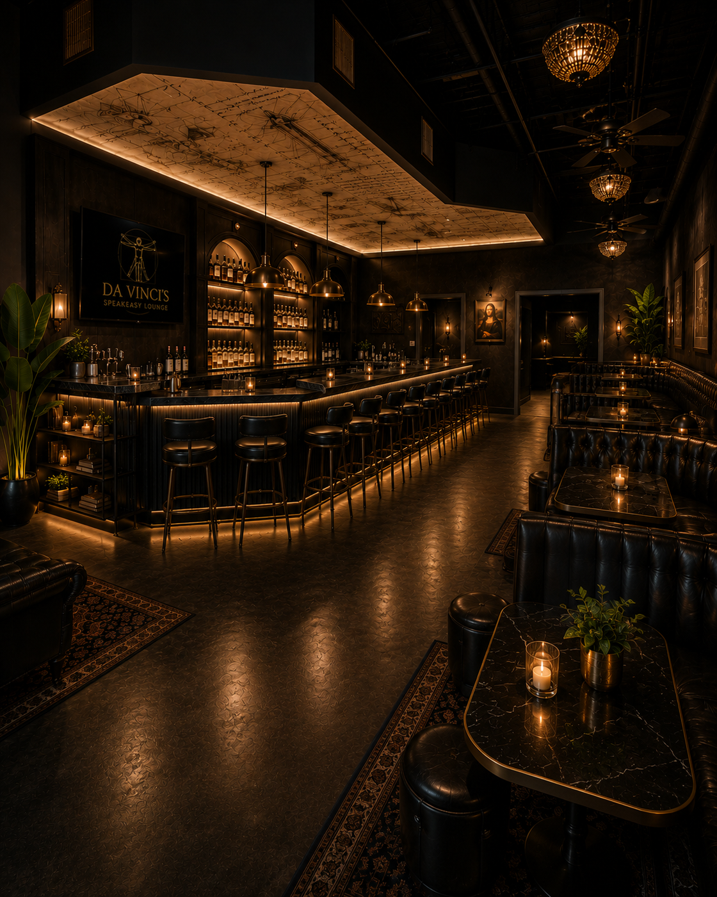

About the lounge
A boutique wine lounge built for slower evenings.
Da Vinci's brings guided pours, quiet tables, retail bottles, and light accompaniments together in a polished Seabrook setting.
The idea
Premium seated hospitality, without the rush.
Da Vinci's is designed as a boutique wine lounge offering on-premise wine, beer, and limited alcoholic beverage service in a premium seated environment.
The room is centered on wine education, guided tastings, social gatherings, and relaxed table service, with a curated retail selection for guests to take home.
What to expect
Curious wine, easy pairings, and a room made for conversation.
- Guided tastings and wine education
- Relaxed table service for social gatherings
- Curated retail bottles, gifts, and accessories
- Artisan cheese, charcuterie, crostini, and gourmet provisions
Quiet by design
Upscale, responsible, and neighborhood-minded.
Da Vinci's is not planned as a nightclub, dance floor, or late-night bar operation.
The focus is responsible alcohol service, customer education, and hospitality that feels refined, calm, and compatible with the neighborhood.